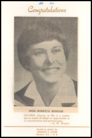
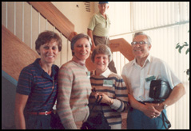
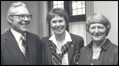

Home • Collection • Biography • Canadian Astronauts • Mission STS-42 • Microgravity Lab • Homecoming
Biography
Dr. Roberta Bondar was born in Sault Ste. Marie Ontario on December 4, 1945. Dr. Bondar completed both her elementary and secondary schooling in Sault Ste. Marie graduating from Sir James Dunn Collegiate & Vocational School. Her father, Edward Bondar was an office manager at the Sault Ste. Marie Public Utilities Commission and her mother, Mildred, taught business and commerce. Both parents encouraged Roberta and her older sister, Barbara to be goal oriented and the girls were involved in many activities including Girl Guides, the YMCA, Anglican Church groups and many sporting activities. As a young girl Dr. Bondar was fascinated with science and her father built her a laboratory in their basement. In high school, a science project led Dr. Bondar to a summer job studying the spruce budworm at what is today the Great Lakes Forestry Centre.
 |
 |
 |
Roberta Bondar graduation photo from the |
Roberta Bondar, Her sister Barbara, her mother Mildred and her father Edward. |
Roberta Bondar with her parents. |
Dr. Bondar continued her work in the sciences receiving a Bachelor of Science Degree in Zoology and Agriculture from Guelph University in 1968, a Master of Science Degree in Experimental Pathology from the University of Western Ontario in 1971, a Doctrate in Neurobiology from the the University of Toronto in 1974, a Doctor of Medicine Degree from McMaster University in 1977 and she was admitted as a Fellow of the Royal College of Physicians and Surgeons of Canada in neurology in 1981.
In 1983 Dr. Bondar was chosen as a member of the first Canadian Astronaut Program. In January, 1992 she became the second Canadian and the first Canadian woman astronaut in space with her flight aboard the shuttle Discovery. Following her space flight Dr. Bondar left the space agency to pursue her research and her interest in photography. Roberta has had several exhibitions of her photographic works including the "Passionate Vision" in 2000, which documented Canada's National parks.
Dr. Bondar has received many honors including the Order of Canada, the Order of Ontario, the NASA Space Medal, over 22 honorary degrees and induction into the Canadian Medical Hall of Fame.